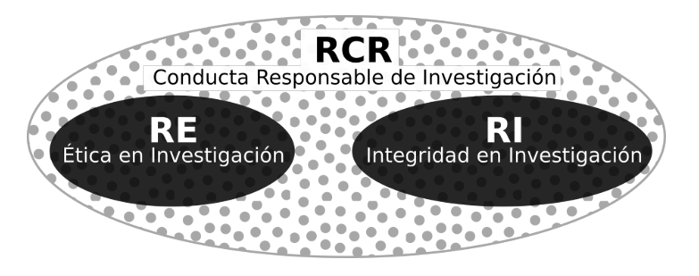
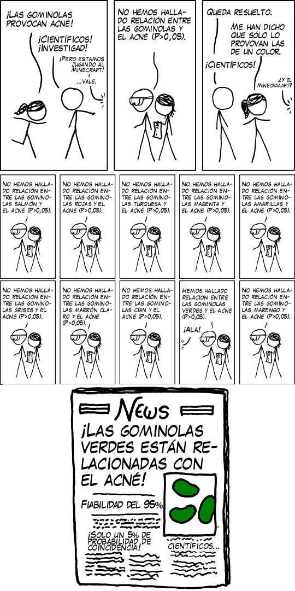

| Práctica | Psicología¹ | Psicología² | Psicología³ | Ecología⁴ | Evolución⁴ | Educación⁵ | Comunicación⁶ |
|---|---|---|---|---|---|---|---|
| Omitir estudios o variables no significativas | 46 (485) | 40 (217) | 55 (232) | - | - | 62 (783) | 60 |
| Subreportar resultados | 63 (486) | 48 (219) | 22 (232) | 64 | 64 | 67 (871) | 64 |
| Subreportar condiciones | 28 (484) | 16 (219) | 35 (232) | - | - | - | - |
| Muestreo selectivo | 56 (490) | 53 (221) | 22 (232) | 37 | 51 | 29 (806) | 23 |
| Excluir datos selectivamente | 38 (484) | 40 (219) | 20 (232) | 24 | 24 | 25 (806) | 34 |
| Excluir covariables selectivamente | - | - | - | - | - | 42 (773) | 46 |
| Cambiar análisis selectivamente | - | - | - | - | - | 50 (811) | 45 |
| HARK | 27 (489) | 37 (219) | 9 (232) | 49 | 54 | 46 (880) | 46 |
| Redondear valores p | 22 (499) | 22 (221) | 18 (232) | 27 | 18 | 29 (806) | 24 |
| Mal orientar respecto a efectos sociodemográficos | 3 (499) | 3 (223) | 4 (232) | - | - | - | - |
| Esconder problemas | - | - | - | - | - | 24 (889) | - |
| Esconder imputaciones | 1 (495) | 2 (220) | 1 (232) | 5 | 2 | 10 (898) | 9 |
| ¹ John et al. (2012) | |||||||
| ² Agnoli et al. (2017) | |||||||
| ³ Rabelo et al. (2020) | |||||||
| ⁴ Fraser et al. (2018) | |||||||
| ⁵ Makel & Plucker (2021) | |||||||
| ⁶ Bakker et al. (2020) |
Sobre la transparencia
La transparencia es un concepto multidimensional. [@elliott_taxonomy_2020] propone entender la transparencia en torno a cuatro preguntas: ¿por qué?, ¿quién? ¿qué? y ¿cómo? (ver Figure 1). Cada una de estas preguntas se relaciona a una dimensión. La primera pregunta (¿por qué?) se refiere a las razones y propósitos por los cuales es necesario adoptar la transparencia; la segunda pregunta (¿quién?) apunta a la audiencia que está recibiendo la información; la tercera pregunta (¿qué?) hace alusión al contenido que es transparentado y la cuarta pregunta (¿cómo?) consiste en cuatro dimensiones distintas sobre cómo adoptar la transparencia: actores, mecanismos, tiempo y espacios. También, esta taxonomía estipula una dimensión sobre las amenazas que podrían afectar a las iniciativas que busquen promover la transparencia. A raíz de estas dimensiones podemos comprender qué tipo de prácticas y situaciones caben dentro del concepto de transparencia.

Basándonos en esta taxonomía, presentaremos una propuesta sobre qué se entiende por transparencia en las ciencias sociales y cómo podemos adquirir prácticas orientadas a este principio. Nuestra propuesta es entender la transparencia como la apertura pública del diseño de investigación, lo que incluye todo tipo de información importante para la ejecución del estudio, desde las hipótesis hasta el plan de análisis. Esto permitirá que las personas que lean los hallazgos de investigación (ya sean científicos o la ciudadanía) puedan evaluar la credibilidad de estos y descartar la influencia de prácticas cuestionables de investigación. Para llevar a la práctica esta propuesta, presentaremos la elaboración de preregistros como una de las principales herramientas que contribuyen a hacer público el diseño, además de otras que complementan su uso.
¿Por qué?
La pregunta del por qué es necesario avanzar hacia la transparencia encuentra su respuesta en la existencia de prácticas de investigación que merman la credibilidad de los hallazgos científicos. A modo de entender qué es lo problemático de ciertas prácticas, es que [@steneck_fostering_2006] propone el concepto de Conducta Responsable de Investigación (RCR, por sus siglas en inglés) como un ideal que engloba prácticas éticas e íntegras dentro de la investigación científica (ver Figure 2). Según este autor, la distinción entre la ética y la integridad recae en que la primera tiene que ver con seguir principios morales dentro de la investigación (e.g. usar consentimientos informados), en cambio, la segunda está más relacionada con el seguimiento de códigos de conductas y estándares profesionales [@abrilruiz_manzanas_2019].

Las prácticas de investigación se pueden evaluar en un continuo que representa cuánto adhieren los investigadores a los principios de integridad científica [@steneck_fostering_2006]. La Figure 3 esquematiza esta idea mostrando dos extremos, donde a la izquierda está el mejor comportamiento (RCR) y a la derecha el peor comportamiento (FFP). Las FFP son una abreviación en lengua inglesa para referirse a Fabrication, Falsification, Plagiarism (Invención, Falsificación y Plagio), también conocidas como mala conducta académica. En el medio del continuo están las prácticas cuestionables de investigación (QRP, por sus siglas en inglés) las cuales refieren a las “acciones que violan los valores tradicionales de la empresa de investigación y que pueden ser perjudiciales para el proceso de investigación” [_National Academies of Science_ 1992 en @steneck_fostering_2006, p.58]. Las QRP se caracterizan porque tienen el potencial de dañar la ciencia, en tanto las FFP la dañan directamente.

La mala conducta académica implica la violación de los principios de integridad científica. Esto se relaciona con el falseamiento de datos de cualquier forma: invención de datos, alteración de gráficos o tablas, entre otros. El caso de Diderik Stapel presentado en la introducción de este capítulo es un ejemplo que cabe dentro del concepto de mala conducta académica. Según la literatura, la prevalencia de este tipo de prácticas no es alta [e.g. @fanelli_how_2009; @john_measuring_2012], sino que más bien son casos aislados [ver @abrilruiz_manzanas_2019, pp.23-128 para una revisión]. En contraste, las QRP han demostrado ser más prevalentes.
Prácticas cuestionables de investigación (QRP)
Existen una serie de estudios que han intentado medir directamente la prevalencia de estas prácticas a través de encuestas. [@fanelli_how_2009] hizo un metaanálisis que tenía por objetivo sistematizar los resultados de estudios que hasta esa fecha habían abordado las prácticas de investigación desde encuestas cuantitativas. Los resultados mostraron que un 1.97% de investigadores había inventado datos al menos una vez (FFP) y que un 33.7% había realizado alguna vez una QRP como “borrar puntos de los datos basados en un sentimiento visceral”. Unos años más tarde, [@john_measuring_2012] efectuaron otro estudio similar, demostrando que un 36.6% de quienes participaron alguna vez habían practicado alguna QRP. En detalle, analizando los porcentajes práctica a práctica los resultados muestran que el 50% de los psicólogos encuestados alguna vez reportaron selectivamente estudios que apoyaran sus hipótesis; un 35% alguna vez reportaron resultados inesperados como esperados; y un 2% alguna vez reportó datos falsos. Este estudio ha sido replicado en Italia [@agnoli_questionable_2017], en Alemania [@fiedler_questionable_2016] y en Brasil [@rabelo_questionable_2020].
Más recientemente, han emergido estudios similares en otras áreas disciplinarias. Por ejemplo, a través de encuestas online [@makel_both_2021] logran constatar que existe una prevalencia considerable de las QRP en el campo de investigación educacional. De los participantes de la muestra, un 10% admitió haber rellenado datos faltantes (NA’s) y un 67% señaló alguna vez haber omitido ciertos análisis de manera intencional. Siguiendo el mismo método, en el campo de la investigación comunicacional se ha encontrado evidencia parecida: 9% de los encuestados señala haber imputado datos faltantes sin reportarlo, un 34% declaró alguna vez haber excluido casos extremos de forma arbitraria y un 60% señala no haber reportado análisis con variables clave que no funcionaron. Del mismo modo, en los estudios cuantitativos sobre criminología existe un uso extendido de las QRP: un 87% de la muestra de [@chin_questionable_2021] ha utilizado múltiples QRP, siendo el reporte selectivo de resultados el más común (53%). Por último, fuera del área de las ciencias sociales, pero siguiendo la misma línea, [@fraser_questionable_2018] también encuentran evidencia a favor de la existencia de distintas QRP en el campo de la ecología y evolución.
Los estudios mencionados arriba corresponden a la evidencia existente sobre la medición de QRP a través de encuestas. A modo de resumen, la Table 1 adaptada del trabajo de [@chin_questionable_2021] agrupa la información que hemos revisado (y más), ordenándose por prácticas, campos de estudio y los artículos correspondientes a cada campo de estudio. Los números dentro de las casillas representan el porcentaje de prevalencia de cada práctica reportado por los participantes del estudio, y entre paréntesis el número de casos de la muestra. Los guiones significan que este estudio no incluyó esa práctica en el cuestionario.
Como se observa en la Table 1, las encuestas sobre QRP han incluido varias prácticas relativas al tratamiento y análisis de los datos. No obstante, consideramos que existen tres términos que, en su mayoría, logran sintetizar esta tabla y que están relacionados a la transparencia en los diseños de investigación. Estas son: 1) los sesgos de publicación, 2) el p-hacking y el 3) HARKing.
Sesgo de publicación
El sesgo de publicación ocurre cuando el criterio determinante para que un artículo sea publicado es que sus resultados sean significativos, en desmedro de la publicación de resultados no significativos. Un ejemplo ilustrativo que usan [@christensen_transparent_2019] para explicar esta práctica es el cómic xkcd titulado Significant. Este cómic (Figure 4) muestra cómo es que un hallazgo de investigación sufre del sesgo de publicación. Al publicarse únicamente el resultado significativo e ignorándose los otros 19 no significativos, cualquier lector tendería a pensar que efectivamente las gominolas verdes causan acné, cuando probablemente sea una coincidencia. El trabajo de [@rosenthal_file_1979] fue de los primeros en llamar la atención respecto de esta práctica, adjudicando el concepto de file drawer problem (en español: problema del cajón de archivos), el que hace alusión a los resultados que se pierden o quedan “archivados” dentro de un cuerpo de literatura. Desde ese estudio en adelante varios autores han contribuido con evidencia empírica sobre el sesgo de publicación. Por ejemplo, el estudio de [@franco_publication_2014] logra cuantificar esta situación encontrando que los resultados nulos tienen un 40% menos de probabilidades de ser publicados en revistas científicas, en comparación a estudios con resultados significativos. Es más, muchas veces los resultados nulos ni siquiera llegan a ser escritos: más de un 60% de los experimentos que componen la muestra del estudio de [@franco_publication_2014] nunca llegaron a ser escritos, en contraste con el 10% de resultados significativos.

El principal problema del sesgo de publicación es que puede impactar en la credibilidad de cuerpos enteros de literatura. Por ejemplo, en economía se han hecho varios metaanálisis que han buscado estimar el sesgo de publicación en distintos cuerpos de literatura [e.g. @brodeur_star_2016; @vivalt_heterogeneous_2015; @viscusi_role_2014]. Uno de los trabajos más concluyentes es el de [@doucouliagos_are_2013], quienes efectúan un metaanálisis de 87 artículos de metaanálisis en economía. En este trabajo encuentran que más de la mitad de los cuerpos de literatura revisados sufren de un sesgo “sustancial” o “severo”. Si bien en economía se ha avanzado mucho en este tipo de estudios, también a partir del desarrollo de distintos métodos de detección, se ha podido diagnosticar el sesgo de publicación en importantes revistas en sociología y ciencias políticas [@gerber_publication_2008; @gerber_statistical_2008].
P-hacking
Otra práctica bastante cuestionada es el p-hacking. El p-hacking suele englobar muchas de las prácticas que vimos en un inicio, especialmente las que refieren al manejo de datos: excluir datos arbitrariamente, redondear un valor p, recolectar más datos posterior a hacer pruebas de hipótesis, entre otras. Lo que tienen todas estas prácticas en común y lo que define el p-hacking es que se da cuando el procesamiento de los datos tiene por objetivo obtener resultados significativos. Si el sesgo de publicación afecta la credibilidad de un cuerpo de literatura, el p-hacking afecta a la credibilidad de los artículos mismos, ya que al forzar la significancia estadística la probabilidad de que en realidad estemos frente a un falso positivo aumenta. Un trabajo que da sustento a esta idea es el de [@simmons_falsePositive_2011], quienes calculan la posibilidad de obtener un falso positivo (error Tipo I) de acuerdo con el nivel de grados de libertad que son utilizados por parte de los investigadores. El resultado principal es que a medida que aumenta el uso de grados de libertad, la posibilidad de obtener un falso positivo aumenta progresivamente.
El p-hacking también contribuye a sesgar cuerpos enteros de literatura. Para diagnosticar esto se ha utilizado una herramienta denominada p-curve, la cual “describe la densidad de los p-values reportados en una literatura, aprovechando el hecho de que si la hipótesis nula no se rechaza (es decir, sin efecto), los p-values deben distribuirse uniformemente entre 0 y 1” [@christensen_transparent_2019, p.67.]. De esta manera, en cuerpos de literatura que no sufran de p-hacking, la distribución de valores p debería estar cargada a la izquierda (siendo precisos, asimétrica a la derecha), en cambio, si existe sesgo por p-hacking la distribución de p-values estaría cargada a la derecha (asimetría a la izquierda). [@simonsohn_pcurve_2014] proponen esta herramienta y la prueban en dos muestras de artículos de la Journal of Personality and Social Psychology (JPSP). Las pruebas estadísticas consistieron en confirmar que la primera muestra de artículos (que presentaban signos de p-hacking) estaba sesgada, en cambio la segunda muestra (sin indicios de p-hacking), no lo estaba. Los resultados corroboraron las hipótesis, esto es: los artículos que presentaban solamente resultados con covariables resultaron tener una p-curve cargada a la derecha (asimétrica a la izquierda).
HARKing
Por último, pero no menos importante, está la práctica del HARKing. El nombre es una nomenclatura en lengua inglesa: Hypothesizing After the Results are Known, que literalmente significa establecer las hipótesis del estudio una vez que se conocen los resultados [@kerr_harking_1998]. El principal problema de esta práctica es que confunde los dos tipos de razonamiento que están a la base de la ciencia: el exploratorio y el confirmatorio. El objetivo principal del razonamiento exploratorio es plantear hipótesis a partir del análisis de los datos, en cambio, el razonamiento confirmatorio busca plantear hipótesis basado en teoría y contrastar esas hipótesis con datos empíricos. Como señala [@nosek_preregistration_2018], cuando se confunden ambos tipos de análisis y se hace pasar un razonamiento exploratorio como confirmatorio se está cometiendo un sesgo inherente, ya que se está generando un razonamiento circular: se plantean hipótesis a partir del comportamiento de los datos y se confirman las hipótesis con esos mismos datos
¿Qué? y ¿Quién?
Preguntarse por el qué es básicamente cuestionarse sobre lo que se está poniendo a disposición del escrutinio público. Dentro de la literatura sobre ciencia abierta, son varios los contenidos que pueden ser transparentados. Por ejemplo, la apertura de los datos es una alternativa que, ciertamente, contribuye a hacer un estudio más transparente [@miguel_promoting_2014]. Al estar los datos abiertos al público, la posibilidad de escrutinio por parte de las audiencias es mayor. Otro ejemplo es la idea de disclosure, la cual se refiere a la declaración que hacen los investigadores respecto a si la investigación cuenta con conflictos de interés o si está sesgada de alguna manera. En base a esta idea, recientemente han emergido propuestas cómo las de [@oboyle_chrysalis_2017] que, además de la declaración de conflicto interés, llaman a adoptar declaraciones relacionadas a las QRP. Básicamente declarar si se ha cometido QRP o no durante el transcurso de la investigación. No obstante, la apertura pública de los diseños de investigación es, sin duda, la práctica que mejor representa la transparencia en el último tiempo.
Como hemos revisado anteriormente, existe una emergente preocupación en las ciencias sociales respecto a la credibilidad de los hallazgos científicos y la influencia que pueden tener las QRP. En disciplinas como la psicología la apertura de los diseños de investigación ha sido la principal herramienta ante el diagnóstico que una parte considerable de los hallazgos eran irreproducibles o irreplicables [@motyl_state_2017; @wingen_no_2020; @camerer_evaluating_2018]. Ante un diagnóstico similar en sociología [@breznau_observing_2021], en ciencias de la gestión [@byington_solutions_2017] y en economía [@gall_credibility_2017], por dar algunos ejemplos, también se ha reconocido la apertura del diseño de investigación como una herramienta importante para avanzar hacia la transparencia. A razón de esto, es que nuestra propuesta se focaliza en la apertura de los diseños de investigación y el uso de preregistros.
Además de preguntarse por los contenidos que se transparentan, también es relevante hacer un alcance respecto al quién. Esto es tener en consideración quiénes van a recibir la información que sea transparentada. En principio, los hallazgos de la investigación científica son un bien público -o están pensados para serlo-. Si bien en algunos países o áreas especificas del conocimiento el financiamiento de la ciencia es por parte de privados, la investigación en ciencias sociales en Chile se financia con los impuestos de los habitantes. Organismos como la Agencia Nacional de Investigación y Desarrollo de Chile (ANID), quienes están encargados de la administración de fondos para la ciencia, tienen un rol público, por lo que los hallazgos no solo sirven para alimentar el avance del conocimiento dentro de la academia, sino que también son insumos relevantes para los tomadores de decisiones y/o para cualquier ciudadano que se podría beneficiar de esos hallazgos.
En consiguiente, cualquier tipo de información que sea transparente es un insumo más para que distintos tipos de audiencias puedan beneficiarse de hallazgos más creíbles y robustos. Ya sean investigadores, tomadores de decisión o la ciudadanía.
¿Cómo?
Una buena forma de introducir el cómo adoptar la transparencia son las Transparency and Openess Promotion (TOP) Guidelines_ (Guías para la Promoción de la Transparencia y la Accesibilidad). Las TOP Guidelines son una iniciativa del Centro para la Ciencia Abierta (COS, por sus siglas en inglés) que busca fomentar la ciencia abierta a partir de la adopción de distintos principios. Su objetivo es que tanto los investigadores como las revistas científicas adhieran a prácticas transparentes. Los principios van desde temas de citación, hasta la replicabilidad (ver el detalle sobre esta propuesta en https://osf.io/9f6gx/). Si bien esta es una iniciativa que incluye principios que escapan del enfoque de este capítulo, es un buen punto de partida ya que permite situar la transparencia en el diseño de investigación y el uso de preregistros como parte de una red de principios más grandes a instalar en la ciencia. Además, permite dar cuenta que ya existe un conjunto de actores preocupados por temáticas de ciencia abierta, que han reconocido la transparencia en los diseños de investigación como un principio importante por adoptar. En lo que sigue, revisaremos cómo los preregistros logran fomentar la transparencia en los diseños de investigación.
Preregistros
Los preregistros son una marca temporal sobre las decisiones del diseño, el método y el análisis de un artículo científico y se suelen hacer antes del levantamiento de datos [@stewart_Preregistration_2020]. Básicamente, preregistrar un estudio implica que un grupo de investigadores dejarán por escrito una pauta de investigación, la cual seguirán cuando desarrollen la investigación, especialmente la recopilación y el análisis de los datos. El objetivo del preregistro es reducir el margen de flexibilidad que tienen los investigadores a la hora de analizar los datos. El que exista una guía sobre qué hipótesis probar y qué análisis realizar hace menos probable que los científicos recurran en prácticas como el sesgo de publicación, p haking o el HARKing.
Como vimos, el sesgo de publicación se trata de publicar selectivamente los resultados de investigación: resultados que no hayan sido significativos, o hipótesis que “no funcionaron” simplemente se omiten. Sin embargo, cuando existe un documento como un preregistro, el cual deja estipulado claramente las hipótesis que deben ponerse a prueba y los análisis que se emplearán para ello, se torna más difícil reportar selectivamente los resultados. Dicho de otra forma, cuando existe una pauta a la cual apegarse, la discrecionalidad en el reporte de los resultados disminuye.
En el caso del p-hacking, el efecto del preregistro es parecido. El p-hacking consiste en abusar de las pruebas estadísticas para obtener resultados significativos. “Abusar” en el sentido de buscar toda vía posible para obtener un valor p que confirme las hipótesis planteadas. El hecho de preregistrar el plan de análisis y el procesamiento que se le efectuará a las variables permite evitar este tipo de búsqueda intencionada: como hay una guía que seguir, cualquier desviación debe ser justificada. En esta misma línea, un preregistro evita el HARKing ya que las hipótesis están previamente planteadas y no es posible cambiarlas una vez que se han visto los resultados. En suma, el plantear un registro a priori de la investigación, disminuye la flexibilidad que suele dar paso a las QRP.
Existen resquemores respecto del uso de preregistros de los que es preciso hacerse cargo. Una de las principales preocupaciones es que el uso de preregistros tendería a coartar la creatividad y la producción de conocimiento exploratorio [@moore_preregister_2016]. La lógica es que, como cada parte de la investigación debe ser registrada detalladamente previo a la recopilación, no queda espacio para la espontaneidad durante el análisis de datos. Sin embargo, más que inhibir la investigación exploratoria, el objetivo de preregistar un estudio es separar la investigación confirmatoria (pruebas de hipótesis) y la exploratoria (generación de hipótesis) [@nosek_preregistration_2018]. En ese sentido, es posible la investigación exploratoria bajo el modelo de preregistros, solo que hay que especificarla como tal.
Una segunda creencia es que realizar un preregistro añade un nivel de escrutinio mayor del necesario, es decir, como se conoce cada detalle, la investigación se vuelve un blanco fácil de críticas. Sin embargo, la situación es todo lo contrario [@moore_preregister_2016]. Por ejemplo, haber preregistrado un plan de análisis para una regresión logística binaria con datos que originalmente eran ordinales hará más creíble los resultados, ya que quienes evalúen la investigación tendrán pruebas de que el nivel de medición no se cambió solo para obtener resultados significativos. Una tercera idea en torno a los preregistros es que conllevan una gran inversión de tiempo y energía. Si bien es cierto que se añade un paso más al proceso de investigación, el avance en la temática ha logrado que existan una variedad de plantillas que hacen el proceso más rápido y eficiente. Desde una lógica racional, el tiempo que toma este paso nuevo en la investigación es un costo bajo en contraste a los beneficios que trae.
La característica más importante de los preregistros es que sean elaborados previo al análisis de datos y deseablemente previo a su recopilación. Este requisito es lo que permite asegurar la credibilidad de los resultados, ya que si no hay datos que alterar, entonces las probabilidades de que ocurra una QRP son básicamente nulas. Generalmente, para las ciencias médicas o la psicología experimental (disciplinas donde cada vez se usan más los preregistros), esto no suele ser un problema ya que se utilizan diseños experimentales. Estos se apegan al método científico clásico: se plantean hipótesis basadas en la teoría, se diseña un experimento para probar esas hipótesis y luego se recopilan y analizan los datos para ver si dan soporte a las hipótesis planteadas. Sin embargo, en muchas disciplinas de las ciencias sociales los diseños experimentales son una pequeña fracción del conjunto de la literatura [e.g. según [@card_role_2011] en 2010, solo un 3% de los artículos en las mejores revistas de economía eran experimentales], y lo que prima son los diseños observacionales con datos secundarios. A diferencia de los estudios experimentales, en los estudios con datos preexistentes se afecta el principal componente de credibilidad de los preregistros. Nada puede asegurar que los datos fueron analizados antes de la escritura del preregistro y que, por ejemplo, las hipótesis se están planteando una vez conocidos los patrones significativos (HARKing). De ahí que nace la pregunta sobre la posibilidad de utilizar preregistros en estudios con datos preexistentes.
En la literatura sobre preregistros se han discutido los desafíos que implica preregistrar estudios que utilicen datos preexistentes [e.g. @editors_observational_2014]. Existen posturas que proponen que, en realidad, no existe una forma creíble para preregistrar este tipo de estudios [@christensen_transparency_2018]. No obstante, otras posturas han profundizado en las situaciones en las que aún es posible preregistrar estudios con datos elaborados previamente. [@burlig_improving_2018] propone tres escenarios donde el preregistro de datos observacionales es valioso. El primero es, básicamente, cuando los investigadores que diseñaron la investigación generan sus propios datos, en este caso, los investigadores sí pueden elaborar un preregistro previo a la recolección de datos. El segundo escenario se da cuando se preregistra un estudio que tiene como objeto de interés un suceso que aún no ha ocurrido, lo que se conoce como estudios prospectivos. Por ejemplo, un grupo de investigadores puede estar interesado en el efecto que tendrá la introducción de una ley en las prácticas sociales, o el efecto de un tratado en las variaciones del PIB. Para esos casos, el preregistro aún mantiene su validez original ya que, si bien los datos ya existen, no es posible hacer los análisis antes del preregistro porque el evento de interés no ha ocurrido. El tercer escenario ocurre cuando los datos existen, pero no están abiertos al público. En estos casos, es la accesibilidad lo que determina la credibilidad del preregistro. Por ejemplo, el grupo de investigadores que elaboraron los datos pueden establecer que serán accesibles con previo contacto y que se solicitará un preregistro. Por ende, en orden de analizar los datos, los investigadores interesados deberán elaborar un preregistro para utilizar los datos.
Conforme a lo anterior, [@mertens_preregistration_2019] proponen dos prácticas para asegurar la credibilidad de un preregistro con datos secundarios. Primero, que el grupo de investigadores que analiza los datos sea distinto e independiente de quien propuso el diseño de investigación y segundo, que el equipo realice sintaxis de análisis con datos simulados, con tal de demostrar que las hipótesis ya existían previas a acceder a los datos. Estas propuestas muestran que el requisito sobre la temporalidad del preregistro puede.
La recomendación más transversal y a la vez simple para preregistrar análisis con datos secundarios, es ser sincero y claro respecto a lo que se ha hecho y lo que no [@lindsay_seven_2020 ; @nosek_preregistration_2018]. Por ejemplo, reportar si es que se ha leído el reporte descriptivo sobre la base de datos o si se tiene conocimiento de algún tipo de patrón de los datos. Es preciso transparentar cualquier tipo de aproximación a los datos previo haberlos analizado. Para lograr este nivel de detalle y ser eficiente con los tiempos y la comunicación hacia otros investigadores, es que existen plantillas predeterminadas para preregistrar distintos tipos de artículos en diferentes situaciones. En la siguiente sección presentaremos las plantillas más usadas.